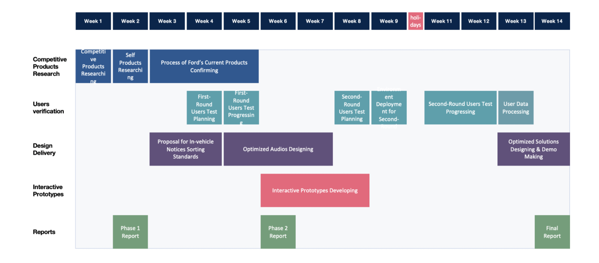
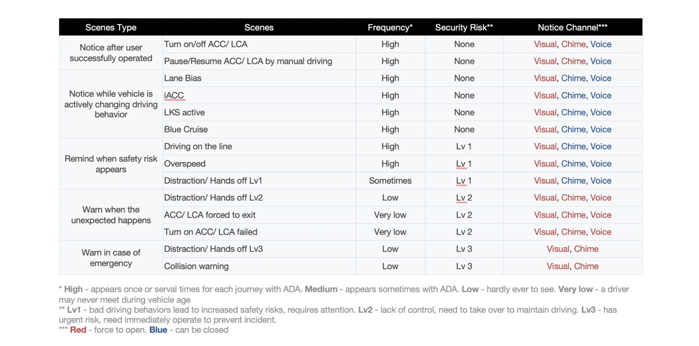
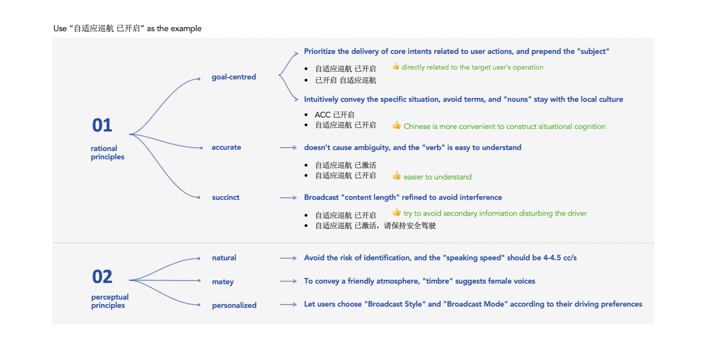
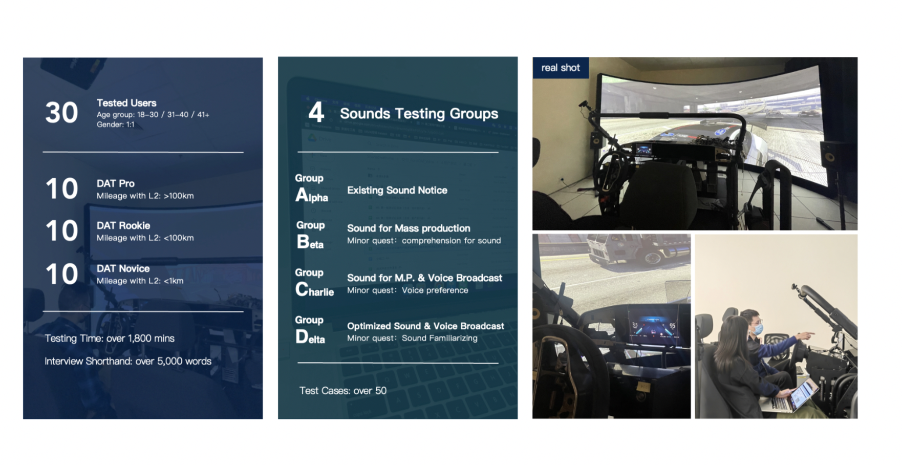
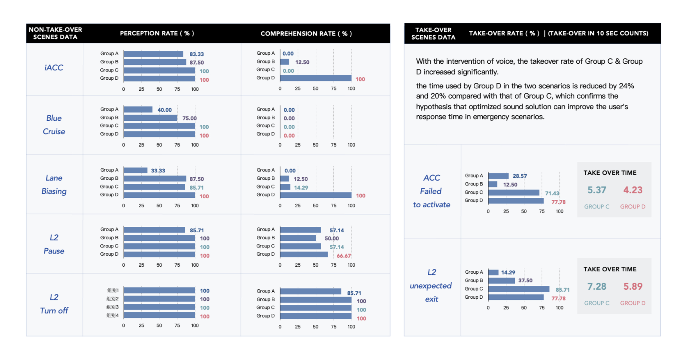

I was lead designer - Sound Design, Voice User Interface Design
Through ADAS Voice, we offer helpful sound guidance and interaction during ADAS functions, such as LKS, ACC, Warning and Parking.
ADAS features are becoming more and more popular within customers, and it's abilities have also been improved a lot since the past few years. However, the related design of user interface in ADAS hasn't been satisfying, which means a big lack in user instructions, system feedback or interface design.
Under such circumstances, we decide to design a more friendly user interface during ADAS, and since it's strongly driving related, we use sound as the main communication channel.

We conducted a usability testing based on the current status of our ADAS functions to verify our initial hypothesis and had some findings.
In addition, we did interview with users to see their daily usage with ADAS and observe our chances to improve the experience.
Therefore, we started designing the ADAS sound experience based on our findings.
We went through all the features, clarified the system behaviors and turned documents into visualized charts, which gives us clearer view on how ADAS works.
According to our findings, there is huge gap of needs between novice and expert drivers. Novice drivers are not clear of how ADAS works and needs instructions for them to have confident while trying ADAS. On the contrary, expert drivers seek a clear and simple interface for them to notice status change, and they are fond of a non-disturbing experience during driving.
Based on frequency of usage and security risk, we arranged the functions and defined the chime / voice that could be switched off for expert users to avoid disturbance.


Based on principles of designing sound in Vehicle (NHTSA) along with our branding sound DNA, we designed the chime of ADAS features.
LKS/ACC On:
LKS/ACC Off:
Blue Cruise (AP) On:
Blue Cruise (AP) Off:
Function fail to activate:
After designing the experience, we conducted another user testing to varify our design.

And through the validation, our design are varified that it significantly improves users' understanding of the functions, reduces their reaction time during emergencies and reduces disturbance for expert users.
